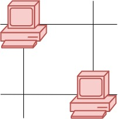
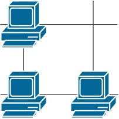
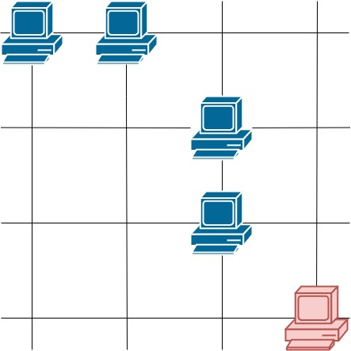

1267. 统计参与通信的服务器
不用并查集：数每行、每列各有几台服务器；同行或同列 ≥ 2 台的都计入答案。
思路
- 第一遍扫矩阵：
row[i]、col[j]分别记录第 i 行、第 j 列的服务器台数。 - 第二遍扫：
grid[i][j] == 1且row[i] > 1 || col[j] > 1就ans++。 - 「能通信」只需存在同行的或同列的另一台，两个计数值直接判断，不用真的连边。
图解
最优解
1class Solution {2 public int countServers(int[][] grid) {3 int m = grid.length, n = grid[0].length;4 int[] row = new int[m], col = new int[n]; // 每行、每列的服务器台数5 for (int i = 0; i < m; i++)6 for (int j = 0; j < n; j++)7 if (grid[i][j] == 1) { row[i]++; col[j]++; }8 int ans = 0;9 for (int i = 0; i < m; i++)10 for (int j = 0; j < n; j++)11 // 同行或同列还有别的服务器，这台就能通信12 if (grid[i][j] == 1 && (row[i] > 1 || col[j] > 1)) ans++;13 return ans;14 }15}题目
这里有一幅服务器分布图，服务器的位置标识在 m * n 的整数矩阵网格 grid 中，1 表示单元格上有服务器，0 表示没有。
如果两台服务器位于同一行或者同一列，我们就认为它们之间可以进行通信。
请你统计并返回能够与至少一台其他服务器进行通信的服务器的数量。
示例 1：

输入：grid = [[1,0],[0,1]] 输出：0 解释：没有一台服务器能与其他服务器进行通信。
示例 2：

输入：grid = [[1,0],[1,1]] 输出：3 解释：所有这些服务器都至少可以与一台别的服务器进行通信。
示例 3：

输入：grid = [[1,1,0,0],[0,0,1,0],[0,0,1,0],[0,0,0,1]] 输出：4 解释：第一行的两台服务器互相通信，第三列的两台服务器互相通信，但右下角的服务器无法与其他服务器通信。
提示：
m == grid.lengthn == grid[i].length1 <= m <= 2501 <= n <= 250grid[i][j] == 0 or 1
题面取自力扣当前版本。
数据快照 2026-11-04。题面版权归力扣所有，本站点仅供本人学习使用，请勿对外发布。